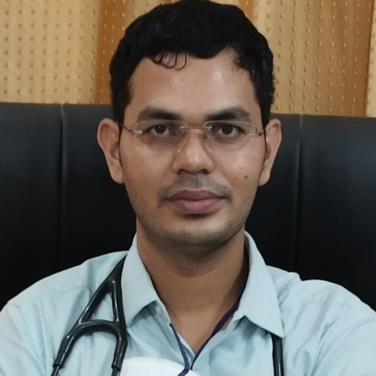
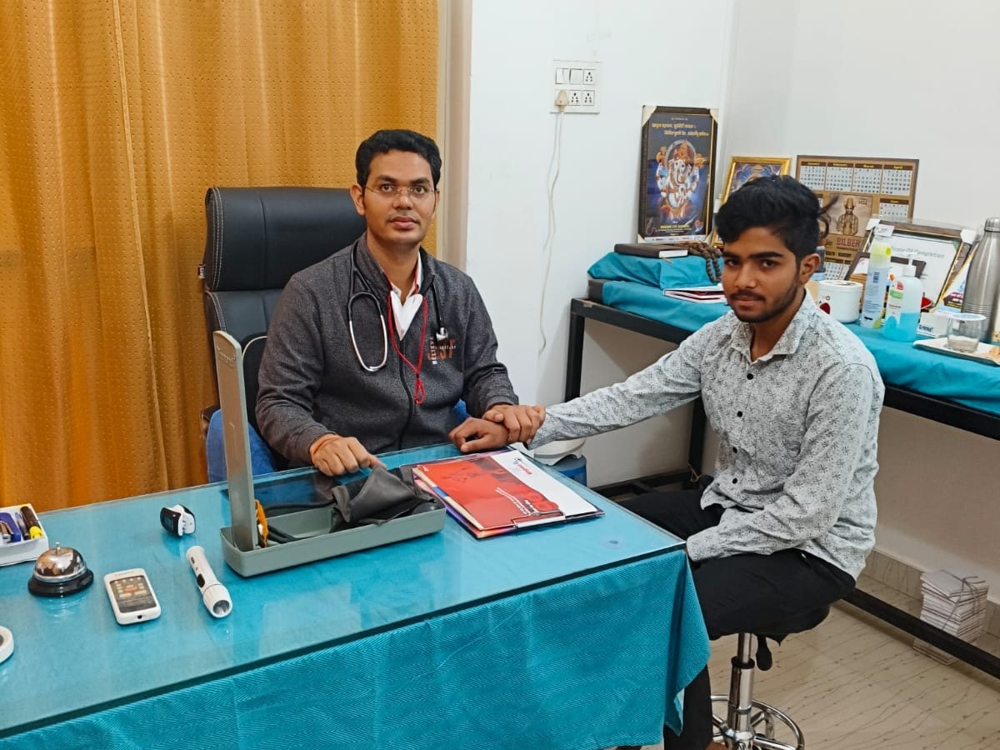
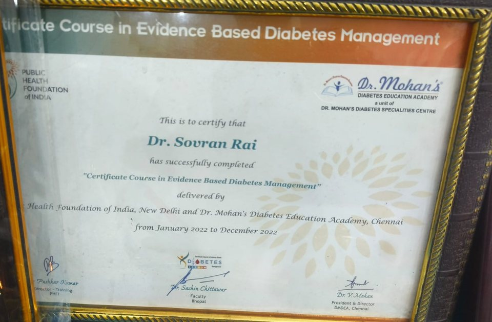
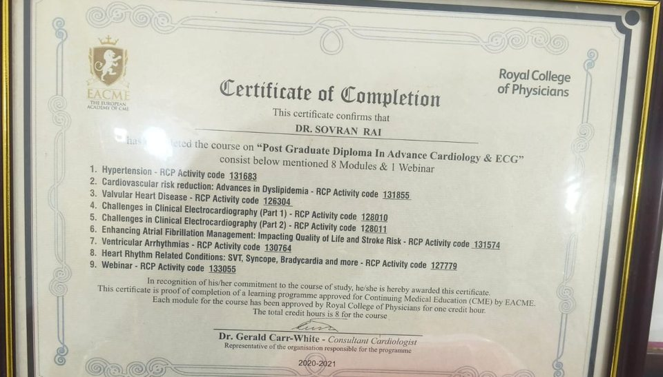
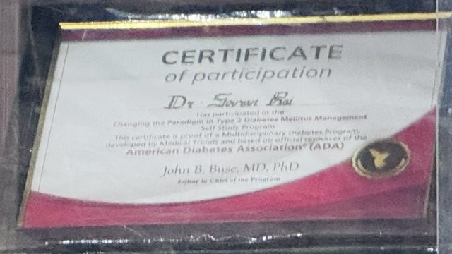
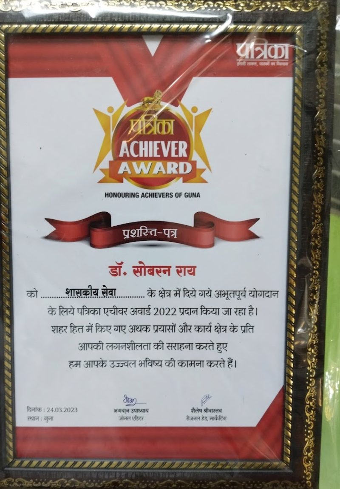
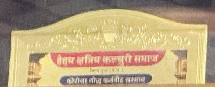
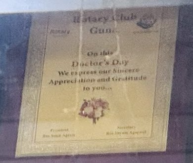

Heart disease
Heart attack care and prevention, congestive heart failure (CHF), high blood pressure.

Consultant Physician · Guna, Madhya Pradesh
MBBSMD (Medicine)Gold Medalist
Online profiles
About the doctor
AIIMS Bhopal–trained physician, now consulting every day in Guna. Experienced care for heart disease, diabetes, lung, liver, kidney, neurological and skin conditions — under one roof, close to home.

Dr. Sovran Rai is a consultant physician holding an MBBS and an MD in Medicine, where he graduated as a gold medalist. Before starting his practice in Guna he served as a physician at the All India Institute of Medical Sciences (AIIMS), Bhopal, and at Greater Kailash Hospital, Indore.
As an internal-medicine specialist he looks after the whole patient — from long-term conditions like diabetes, blood pressure and thyroid disorders, to heart and lung disease, fevers, and problems of the liver, kidneys, nerves and skin.
During the COVID-19 pandemic he completed additional training in mechanical ventilation (Harvard Medical School) and contact tracing (Johns Hopkins University), and was honoured locally as a Corona Warrior. He has since completed courses in advanced cardiology and ECG (2020–21) and in evidence-based diabetes management from the Public Health Foundation of India and Dr. Mohan's Diabetes Education Academy (2022). He has also received the Patrika Achiever Award 2022 for his contribution to government service.
See education & experience →What we treat
Diagnosis, treatment and long-term follow-up for adults across the full range of general medicine.
Heart attack care and prevention, congestive heart failure (CHF), high blood pressure.
Type 2 diabetes management, hypertension and thyroid disorders, with regular follow-up.
About the diabetes clinic →Asthma, COPD and chest infections; post-COVID care backed by ventilation training.
Brain fever, paralysis (stroke), epilepsy, headache, and numbness in the nerves.
Evaluation and treatment of liver disease and kidney (renal) disorders.
Diagnosis and treatment of common skin conditions and infections.
Malaria, typhoid and other seasonal fevers.
Medical management of back pain, neck pain and related nerve symptoms.
Diabetes clinic
Dr. Sovran Rai's clinic is part of the Arogya Diabetes smartRx programme, offering ongoing diabetes care right here in Guna.
Credentials
Postgraduate degree in internal medicine, completed with a gold medal.
Bachelor of Medicine and Bachelor of Surgery.
Registration No. MP17085, Madhya Pradesh.
Indira Nandan Niwas, Chaudharan Colony, Guna (M.P.).
All India Institute of Medical Sciences, Bhopal.
Multi-specialty hospital, Indore.
Continuing education & recognition
Harvard Medical School, USA
Specialised training in ventilator management for critically ill COVID-19 patients.
Johns Hopkins University, USA
Applied training in contact tracing and infection control during the pandemic.

Public Health Foundation of India (PHFI), New Delhi & Dr. Mohan's Diabetes Education Academy, Chennai
A year-long course in evidence-based diabetes care, completed January – December 2022. Certificate signed by Dr. V. Mohan, President & Director of the Academy.

The European Academy of CME (EACME) · modules approved by the Royal College of Physicians
Completed the “Post Graduate Diploma in Advance Cardiology & ECG” course, 2020–21: eight modules and a webinar on hypertension, cholesterol (dyslipidaemia), valvular heart disease, ECG interpretation, atrial fibrillation, heart-rhythm disorders and fainting (syncope) — 8 CME credit hours.

Self-study program based on American Diabetes Association (ADA) resources
Multidisciplinary diabetes program by Medical Trends; editor-in-chief John B. Buse, MD, PhD.



Patient feedback
Selected reviews from patients on Google. Read them all, or share your own experience.
Rating and reviews as shown on Google, November 2026.
Gallery
Before you visit
Call 81097 70140 between 9 AM and 8 PM to book your token number, or send a WhatsApp message to the same number. Booking in advance helps you avoid waiting at the clinic.
Monday to Saturday, 2:00 – 5:00 PM and 6:00 – 8:30 PM. The clinic is closed on Sunday.
Yes. If you can't come to the clinic, call 81097 70140 to arrange an online consultation.
Kanti Rai Memorial Clinic, Indira Nandan Niwas, Aashirwad Hospital Road, Chaudharan Colony (Laxmi Ganj), near Goyal Bhawan, Guna, Madhya Pradesh 473001.
As a consultant physician (MD Medicine) he treats adults across general medicine — diabetes, blood pressure and thyroid disorders, heart and lung disease, fevers and infections, and conditions of the liver, kidneys, brain and nerves, and skin.
This clinic is an outpatient practice. For a medical emergency call 108 or go to the nearest hospital.